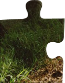
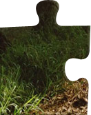

Ihor Medvid
Ознайомлення з css-правилом "Position"
Це правило встановлює спосіб позиціювання елементу відносно вікна браузера чи інших об'єктів на веб-сторінці. Положення елементу задається атрибутами left, top, right і bottom відносно краю вікна браузера.
Приклад блоку в якому використовується значення absolute i relative властивості position:


 



 -->
-->
Значення властивості position
Ця властивість може мати чотири значення: static, relative, absolute, fixed.
absolute Вказує, що елемент абсолютно спозиційований, при цьому елементи відображаються на веб-сторінці ніби абсолютно спозиційованого елемента і немає. Положення елемента задається значеннями top, right, left i bottom, також на положення впливає значення властивості position батьківського елемента. Так, якщо у батьківського елемента значення position встановлено як static чи батька немає, то відлік координат ведеться від краю вікна браузера. Якщо у батька значення position задано як fixed, relative чи absolute, то відлік координат ведеться від краю батьківського елементу.
fixed За своєю поведінкою це значення близьке до absolute, але на відміну від нього прив'язується до вказаної властивостями left, right, top i bottom точки на екрані і не міняє свого положення при прокрутці веб-сторінки.
relative Положення елемента встановлюється відносно його початкового положення . Додавання властивостей left, right, top i bottom міняє позицію елемента і зміщує його в ту чи іншу сторону від початкового положення
static Елементи відображаються як звично. Використовування елементів left, right, top i bottom не призводить до ніяких змін.
inherid Наслідує значення батьківського елементу.